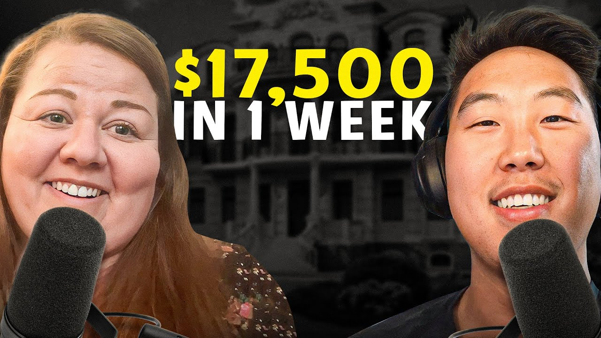

How Lindsay and Her Husband Secured $17,500 in Bookings in One Week (2025 Case Study)
Lindsay and her husband went from 9-to-5 workers to $17,500 in Airbnb bookings within 7 days of going live. Learn their exact strategies for finding properties, negotiating with landlords, and creating a standout cabin rental in the Western North Carolina mountains.


Use This Like a Tool
The point of this page is not more information. The point is better judgment before you act.
- Pull the real numbers first.
- Run a base case and a stress case.
- Use the result to make a cleaner decision, not a faster emotional one.
Lindsay and her husband secured $17,500 in Airbnb bookings within one week of going live. Starting with no real estate experience—Lindsay from nonprofit work overseas and her husband from sales—they joined Legacy Investing Show and hit the ground running. Within a month and a half, they had their first property secured on just their fourth landlord call, and the bookings started flooding in immediately.
This case study breaks down exactly how Lindsay and her husband built their Airbnb arbitrage business in the Western North Carolina mountains, including their strategies for finding properties, negotiating with landlords, and creating a standout cabin that guests can't resist booking.
In this article:
Quick Results: Lindsay's Airbnb Arbitrage Numbers
| Metric | Value | Context |
|---|---|---|
| Bookings in First Week | $17,500 | 14 reservations through New Year's Eve |
| Time to First Property | 21 days | From first landlord contact to signed contract |
| Landlord Calls Made | 4 total | Secured property on fourth call |
| Monthly Cash Flow (Peak) | $2,500-$3,000 | Fall through January season |
| Time to Manage Weekly | 3 hours | Including marketing activities |
| Days Live Before $17,500 | 14 days | Went live September 7th |
| Market | Western North Carolina | 30 minutes outside Asheville |
| Property Name | The Old Fort Cabin | Memorable for repeat guests |
Lindsay's Background: From Nonprofit to Airbnb Entrepreneur
You don't need real estate experience to start Airbnb arbitrage. Lindsay spent over a decade working for a Christian nonprofit overseas, returning to the United States just three weeks before the COVID shutdown. Her journey to short-term rental success proves that transferable skills—networking, communication, and a willingness to learn—matter more than industry background.
The Nonprofit Years Overseas
Lindsay dedicated more than a decade of her life to mission work overseas with a Christian nonprofit organization. It was fulfilling work that aligned with her values, and when you're single, it's easy to let your job become your entire life. The mission gave her purpose, community, and a sense of contribution that kept her engaged for years.
But when she returned to the United States in early 2020, just three weeks before COVID shut everything down, Lindsay found herself at a crossroads. She knew she wanted to pivot to something new in the job market, but she had no idea what that would be. The pandemic became an unexpected pause that would ultimately redirect her entire life.
Life Changes and New Priorities
During COVID, Lindsay met her husband. They got married a year and a half before their interview, making their Airbnb adventure a new chapter as a married couple. Marriage changed everything about how Lindsay thought about work and income.
"Before when I was single and overseas there wasn't anything pulling me away from my job—my life was my job because I liked the mission of it. But now that we're married I'm like, oh I don't want to go there for eight hours. I want to figure out how to spend more time with you."
Lindsay had just turned 40, and her husband had just turned 37. Both worked 9-to-5 jobs—Lindsay selling insurance (home, auto, life) and her husband in sales. While the work was fine and allowed her to meet people and help them, it wasn't a passion. They wanted out of the rat race. They wanted financial freedom and time freedom to travel and enjoy life together.
The problem was finding something significant enough to actually replace their incomes. They'd tried small passive income ventures here and there, but nothing moved the needle. Nothing until Airbnb arbitrage.
Discovering Airbnb Arbitrage
Lindsay discovered the world of Airbnb arbitrage through Instagram on July 2nd—a long weekend while she was chilling on her couch. She stumbled across Preston's free workshop and figured an hour wouldn't hurt. That hour turned into three, and by the time she got off, she was ready to convince her husband this was their path forward.
That same day, they ordered the program and started watching the modules together. The timing felt right: they'd bought their house a year prior and weren't about to take on a second mortgage, but they wanted to build toward something bigger. Airbnb arbitrage offered a way to get their feet wet in real estate, make money while learning, and curb the risk.
"We just got married a year and a half ago so this was a new adventure even as a married couple. Finances can be a sticking point for couples, and it's just neat that we both hopped in on this together. I think it's been great for our marriage, weirdly enough."
The Airbnb Arbitrage Journey: Lindsay's Timeline
July 2023: Discovery Weekend
Situation: Lindsay discovers Airbnb arbitrage on Instagram during a long weekend.
On July 2nd, while relaxing at home, Lindsay found Preston's free workshop and watched the entire three-hour session. By the end of that day, she and her husband had ordered the program and were watching modules together on their TV while Lindsay worked through exercises on her laptop.
They approached market research systematically, using AirDNA to analyze potential markets. Lindsay had grown up in North Carolina and went to college in the mountains—she'd always loved the area and wanted to find a way back without taking on a second mortgage. The data would guide their decision.
August 2023: First Property Secured
Situation: Found and negotiated their first property in just four landlord calls.
Lindsay made her first landlord contact on her birthday—July 21st. The property they ultimately secured was only their fourth call. One landlord had been friendly but was in the middle of an HOA court battle over Airbnb permissions. Another received everything well but had zoning issues. The fourth landlord was perfect.
The landlord was a woman in the middle of a move who had actually heard the term "Airbnb arbitrage" before but didn't fully understand it. She was considering leaving the property 75% furnished, which would significantly reduce Lindsay's setup costs. Those nice leather couches the guests would enjoy? Left behind by the landlord.
They signed the contract on Lindsay's husband's birthday—August 11th. From first contact to signed lease: exactly 21 days.
"We just knew we wanted to get on the market as soon as we could because the fall is peak season up here with the Western North Carolina mountains. So we were pressing them a little bit."
September 2023: Launch and Results
Situation: Went live September 7th and secured $17,500 in bookings within two weeks.
Lindsay set up the listing on her phone while driving to her family's beach vacation. The property went live on September 7th—they actually went live before they were fully ready and blocked out the next week and a half to finish preparations.
Within two weeks, they had 14 bookings totaling $17,500 stretching through New Year's Eve. The bookings came primarily from Airbnb directly, though Lindsay also actively promoted through Instagram and Facebook vacation rental groups.
First Property Stats:
-
Location: 30 minutes outside Asheville, Western NC
-
Property type: Cabin with multiple bedrooms
-
Beds: 3 kings and 1 queen (upgraded from original mix)
-
Key amenities: Hot tub, fire pit, ping pong, darts, outdoor dining
-
Bookings in first 14 days: 14 reservations, $17,500
How to Choose a Market for Airbnb Arbitrage: Lindsay's Western North Carolina Strategy
Western North Carolina is ideal for Airbnb arbitrage because of fall tourism demand and the mountain escape appeal. Lindsay analyzed multiple markets before choosing her area, and the data told a different story than her assumptions.
Why Western North Carolina Works for Short-Term Rentals
Lindsay grew up in North Carolina and attended college in the mountains. She'd always loved the area and wanted to figure out how to get back there one day—preferably without taking on a second mortgage since they'd just bought their primary residence a year earlier.
The Western NC market, particularly the areas around Asheville, attracts visitors for several key reasons:
Fall Foliage Tourism: Peak season runs from fall through January. Visitors flock to the mountains to see the changing leaves, enjoy cooler weather, and experience the cozy cabin atmosphere that's synonymous with mountain getaways.
Year-Round Appeal: While fall is peak season, the mountains attract visitors throughout the year for hiking, outdoor activities, and escapes from city heat. Asheville's food and arts scene brings additional demand.
Proximity to Major Cities: Western NC is accessible for weekend trips from Charlotte, Atlanta, and other southeastern cities—creating a steady stream of guests looking for quick mountain escapes.
Personal Connection: Lindsay introduced her husband to the mountains, and he fell in love with them too. Investing in a place you genuinely enjoy makes the work feel less like work and more like building toward a dream.
Lindsay's Market Research Process
Lindsay followed the program's modules closely, using AirDNA to evaluate potential markets. The results surprised her.
"My college town in the mountains—I thought was going to be like a home run—and it was not on there. But the surrounding areas were."
This is exactly why data matters. Gut feelings and assumptions can lead you astray. Lindsay's intuition said her college town would crush it, but the occupancy rates and average daily rates told a different story. The surrounding areas, including the spot 30 minutes outside Asheville where they ultimately landed, showed much stronger fundamentals.
Key factors Lindsay evaluated:
-
Occupancy rate (via AirDNA)
-
Average daily rate
-
Seasonality patterns (peak fall season in Western NC)
-
Competition density
-
Hot tub prevalence (less than 20% of properties had them—an opportunity)
Pro Tip: Don't skip the data analysis, even for markets you think you know well. Lindsay's assumptions about her college town would have led her to a suboptimal market.
Airbnb Arbitrage Strategies That Actually Work: Lindsay's Playbook
The difference between profitable and unprofitable Airbnb arbitrage comes down to strategy. Lindsay attributes her $17,500 in first-week bookings to four core strategies that helped her stand out immediately.
Strategy 1: The Hot Tub Requirement
What it is: Lindsay made hot tubs a non-negotiable amenity after seeing the data.
Why it works: AirDNA showed that less than 20% of properties in the Western NC area had hot tubs. By adding one, Lindsay instantly put her property in the top tier of listings for guests filtering by this amenity. In mountain destinations, hot tubs aren't just nice-to-have—they're what guests are specifically searching for when they imagine a cozy cabin getaway.
Lindsay's Results with This Strategy:
-
Property appears in hot tub filtered searches (80%+ of competitors don't)
-
Premium pricing justified by high-demand amenity
-
Aligns perfectly with the cozy mountain cabin vibe guests expect
"We saw that on the AirDNA it showed that less than 20% of that area had the hot tub so we wanted to make sure we did that just to stand out."
Strategy 2: Target Audience Design (Family-Friendly Focus)
What it is: Lindsay designed the property with specific guest types in mind—families and groups celebrating special occasions.
Why it works: Rather than creating a generic listing, Lindsay thought carefully about who would book her property and designed the experience around their needs. The mountain cabin vibe plus family amenities creates a clear value proposition for a specific audience.
Design elements for families:
-
Baby gates included
-
Cribs available
-
King beds in most rooms (upgraded from the original twin/full setup)
-
Multiple entertaining spaces for groups
-
Game room with ping pong and darts
-
Fire pit and outdoor dining for gatherings
Lindsay specifically noted that when she travels with kids, she looks for pack-and-plays, high chairs, and similar family amenities. If a property doesn't have them, she won't book it even if it looks great. By including these items, she removes booking friction for her target audience.
Strategy 3: Built-in Marketing (Social Media Integration)
What it is: Lindsay incorporated marketing directly into the property design to generate word-of-mouth and repeat bookings.
Why it works: Guests who share their experience on social media become free marketing. By making the property memorable and creating photo opportunities, Lindsay generates organic reach without additional ad spend.
Marketing elements built into the property:
-
Greenery wall with a sign: "Take a photo and tag us on social media—get 10% off your next visit"
-
Memorable property name: "The Old Fort Cabin" (easy to remember and search for)
-
Instagram handle for the property
-
College pennants wall (great for sports fans to photograph)
-
Fall decor aligned with peak season (photo-worthy seasonal touches)
"We named it something that people could remember so they'll come back to and we'll have repeat guests. There's sometimes where cabins aren't named or properties are not named or they're harder to remember."
Strategy 4: Influencer Marketing for Launch
What it is: Lindsay comped a stay for influencers with 120,000 followers in exchange for social media posts.
Why it works: New listings have no reviews, which can slow initial bookings. By getting influencers to share content, Lindsay built social proof and awareness simultaneously. The influencers were actually her first guests, staying at the property while she collected feedback and built initial momentum.
Lindsay's Results with This Strategy:
-
Immediate social media exposure to 120,000 followers
-
Authentic content created by real guests
-
Feedback on the property before paying customers arrived
-
The influencers reported the place looked "incredible" and "really clean"
Lindsay's Airbnb Arbitrage Results: The Numbers
Lindsay and her husband secured $17,500 in bookings within their first week live. Here's the complete financial breakdown of their Airbnb arbitrage launch.
Before vs. After Airbnb Arbitrage
| Metric | Before (9-to-5 Jobs) | After Airbnb Launch |
|---|---|---|
| Income Source | Insurance sales + husband's sales job | W-2 jobs + $17,500 in bookings |
| Properties | 0 | 1 (second already in discussion) |
| Real Estate Experience | None | Active Airbnb operators |
| Time Working Together | After-work hours only | Building a business as a team |
| Path to Financial Freedom | Unclear | Defined strategy: property every 4-6 months |
Complete Financial Breakdown
| Category | Details | Notes |
|---|---|---|
| First Week Bookings | $17,500 | 14 reservations through New Year's Eve |
| Monthly Cash Flow (Peak) | $2,500-$3,000 | After rent, utilities, and expenses |
| Setup Savings | ~75% furniture included | Landlord left leather couches, major items |
| Hot Tub Financing | 0% for 24 months | Used promotional credit offer |
| Professional Photography | Paid investment | "Worth every penny" per Lindsay |
Property Improvements Made
Lindsay and her husband transformed the property strategically, maximizing impact while minimizing unnecessary spend:
-
Bedroom upgrades: Converted from 1 king, twins, and a full to 3 kings and 1 queen
-
Basement transformation: Black wallpaper accent wall, college pennants display
-
Garage conversion: Ping pong table, dart area, custom mural
-
Outdoor improvements: Hot tub, fire pit, sofas, dining table, string lights
-
Cozy touches: Bookshelf, blanket basket, fall decor, greenery wall
Key Milestones Achieved
-
✅ First property secured in 21 days: From initial landlord contact to signed contract
-
✅ $17,500 booked in first week: 14 reservations through New Year's Eve
-
✅ Built reliable local team: Cleaner (also serves as property manager) and handyman
-
✅ Established social media presence: Instagram for "The Old Fort Cabin"
-
✅ Influencer partnership executed: 120,000-follower reach for launch
-
✅ Second property already in discussion: Target close within 4 months
-
✅ LLC established: Proper business structure in place
Airbnb Arbitrage Lessons: What Lindsay Learned
These five lessons took Lindsay from 9-to-5 worker to $17,500 in bookings within weeks. Each one came from real experience—and could save you months of trial and error.
"It seems like a lot and it seems maybe terrifying to take that risk but we're only a month and a half in and we're already like—it is completely worth the risk."
Lesson 1: Follow the Data, Not Assumptions
The Mistake: Assuming you know which markets will perform best without checking the data.
What Happened: Lindsay was confident her college town in the North Carolina mountains would be a "home run" for Airbnb. She'd loved the area for years and assumed visitors would too. When she actually ran the numbers through AirDNA, the data told a different story—her college town didn't perform well, but surrounding areas did.
Had she gone with her gut, she might have selected a suboptimal market. Instead, she followed the data to an up-and-coming area 30 minutes outside Asheville that she was "shocked" performed so well.
Why This Matters: Your assumptions about markets are often wrong. Areas that feel touristy might be oversaturated. Areas you've never considered might have untapped demand. Only data can tell you the truth.
Lesson 2: Get Landlords on the Phone
The Mistake: Trying to explain Airbnb arbitrage through text messages or emails.
What Happened: Lindsay knew that text-based explanations of Airbnb arbitrage would likely fail. Instead, her strategy was to get landlords on the phone where she could build rapport and demonstrate competence. Her initial outreach was simple: "Hey beautiful property—would you consider doing a 2 to 4 year lease?" Only after they expressed interest would she try to get them on a call.
On the phone, Lindsay could explain the win-win arrangement, guarantee consistent monthly payments, promise no parties, and generally woo landlords with her personality and competence.
"If I asked them anything through text it would probably not go well. So I knew if I could get them on the phone that would be great."
Why This Matters: Airbnb arbitrage is an unfamiliar concept to most landlords. Text creates suspicion; conversation builds trust. Your personality, enthusiasm, and professionalism come through on calls in ways that text simply can't convey.
Lesson 3: Don't Get Stuck in Research Quicksand
The Mistake: Doing so much research that you never actually take action.
What Happened: Lindsay and her husband made a conscious effort to avoid "quicksand of research." They knew that some landlords might have zoning issues or HOA restrictions, but they decided to make the calls first and figure out the details later. One landlord was in the middle of an HOA court battle, another had zoning issues—but they only discovered this by calling, not by researching endlessly upfront.
On their fourth call, they found their property. Had they spent weeks researching zoning regulations before making any calls, they would have delayed their launch and missed the crucial fall season.
Why This Matters: Analysis paralysis kills more Airbnb businesses than bad decisions. You'll never have perfect information. The hosts who succeed are those who start, learn, and adapt—not those who research indefinitely.
Lesson 4: Build a Reliable Local Team
The Mistake: Trying to manage everything yourself, especially when you're 2.5 hours from the property.
What Happened: Lindsay's property is 2.5 hours from her home—close enough to visit, but too far for daily involvement. She found a cleaner who essentially serves as a property manager, handling mail and keeping an eye on things. She also secured a reliable handyman. Together, they handle the on-the-ground operations that Lindsay can't do remotely.
When guests message about how clean and well-decorated the property looks, Lindsay knows her team is performing. That trust lets her manage the property with minimal weekly time investment.
Why This Matters: Your local team is your eyes, ears, and hands when you can't be there. Finding reliable cleaners and maintenance people early prevents problems from becoming emergencies.
Lesson 5: Count All the Costs (Especially Hot Tubs)
The Mistake: Underestimating the true cost of adding premium amenities.
What Happened: Lindsay identified hot tubs as a key differentiator—less than 20% of local properties had them. But when she went to install one, she discovered the full cost extended far beyond the tub itself. Electricians, permits, installation, and setup all added up.
She used 0% interest financing for 24 months to manage the cash flow impact. For her next property, she's specifically filtering Zillow searches to find places that already have hot tubs installed.
"Hot tubs are needed—they make sure you count all the costs before you do it. That was our surprising challenge—how much it was to get the hot tub."
Why This Matters: The purchase price of an amenity is rarely the total cost. Installation, electrical work, permits, and ongoing maintenance all add up. Budget for the complete picture, not just the sticker price.
Best Tools for Airbnb Arbitrage: Lindsay's Tech Stack
Lindsay manages her property with minimal daily time using these tools. Here's what powers her operation.
| Category | Tool | Purpose | Why Lindsay Chose It |
|---|---|---|---|
| Market Research | AirDNA | Market analysis and property evaluation | Program recommended; showed hot tub opportunity |
| Property Listings | Zillow | Finding rental properties | Easy to message landlords and filter by features |
| Social Discovery | Facebook Marketplace | Additional property leads | Reached out to some landlords here too |
| Marketing | Property promotion | Created @theoldfortcabin for direct marketing | |
| Community Marketing | Facebook Groups | Finding guests | NC vacation rental groups; responds to requests |
| Business Structure | LLC | Legal protection | Program recommended for proper setup |
AirDNA: Market Research That Drives Decisions
What it does: Provides data on occupancy rates, average daily rates, revenue projections, and amenity prevalence by market.
How Lindsay uses it: Lindsay put the AirDNA modules on her TV and worked through exercises on her laptop with her husband. The data showed her college town wasn't actually a good market—but surrounding areas were. AirDNA also revealed that less than 20% of properties had hot tubs, identifying a key differentiation opportunity.
Pro tip: "Run the numbers. Follow the data with a reliable data source. A lot of times people just go with their gut feeling and a lot of times gut feeling might be wrong."
Instagram: Property-Specific Marketing
What it does: Allows direct promotion of the property and engagement with potential guests.
How Lindsay uses it: Created a dedicated handle for The Old Fort Cabin. Spends about 30 minutes daily creating content, reels, and engaging with potential guests. Also uses the greenery wall at the property to encourage guest tagging for 10% off their next visit.
Pro tip: Name your property something memorable. "There's sometimes where cabins aren't named or they're harder to remember. We intentionally named it something that people could remember."
Lindsay's Advice for Airbnb Arbitrage Beginners
"It seems like a lot and it seems maybe terrifying to take that risk but you know we're only a month and a half in and we're already like—it is completely worth the risk."
If Lindsay were giving advice to someone just starting, here's what she'd say:
Just Do It
Lindsay's biggest advice is simple: stop waiting. So many people get stuck in analysis, waiting for conditions to be perfect, waiting until they feel more secure. But that perfect moment never comes.
"I think that's why so many people get stuck in lives and schedules and these 9-to-5s—whatever it is, you get stuck in these lives and you just watch and say maybe one day I'll do it when this is more secure, this is more secure. And I would say just do it."
Within a month and a half of starting, Lindsay and her husband had a property secured with $17,500 in bookings. They'd proven the concept works. Now they're already talking about their second property.
Do It Together
One unexpected benefit Lindsay discovered was how great this journey has been for their marriage. Finances can be a sticking point for couples, but having a shared project with shared goals brought them closer together.
Her husband handles some aspects, she handles others, and they watch the program modules together. It's a team effort toward a shared vision of financial and time freedom.
Airbnb Is Alive and Kicking
Some people worry that the Airbnb opportunity has passed or that the market is saturated. Lindsay's results prove otherwise. Going live in September 2023, she immediately saw strong demand. The platform works—it's about execution, not timing.
The key is differentiation: hot tubs when only 20% have them, professional photos, family-friendly amenities, memorable branding. Stand out, and bookings follow.
Start With Your Backyard
Lindsay's property is in her backyard market—same state, drivable distance, an area she knows and loves. This gives her advantages: she understands what makes the mountains special, she can visit to make improvements, and her team handles the same area she's already familiar with.
For their second property, they're looking in the same general area so their existing handyman and cleaners can service both. Build local density before expanding to new markets.
Have a Plan for Growth
Lindsay and her husband aren't stopping at one property. Their goal: add a new property every 4-6 months until they can both leave their 9-to-5 jobs. After the fourth or fifth property, they want to look at actually purchasing real estate—but arbitrage lets them build cash flow and experience first.
"This is a great way to get your foot in the door, make money while you're figuring out where you want to invest larger chunks. It's been a great way for us to get our feet wet, make some money, but also curb the risk and be more educated in where we want to purchase."
Watch Lindsay's Full Interview
Video highlights:
-
0:00 - Introduction and $17,500 results overview
-
3:00 - Lindsay's background and discovery of Airbnb arbitrage
-
8:00 - Why they chose Western North Carolina
-
12:00 - Property walkthrough and design decisions
-
18:00 - Hot tub strategy and amenity differentiation
-
22:00 - Landlord negotiation and closing the deal
-
26:00 - First guests and influencer marketing
-
30:00 - Advice for beginners
Frequently Asked Questions
How much money can you really make with Airbnb arbitrage?
Lindsay and her husband secured $17,500 in bookings within their first week live—14 reservations stretching through New Year's Eve. They project $2,500-$3,000 in monthly cash flow during peak season (fall through January in Western NC) after paying rent, utilities, cleaning, and all other expenses.
Results vary by market, property type, and amenities. Lindsay's success came from strategic differentiation: hot tub (only 20% of competitors had one), professional photography, family-friendly amenities, and timing their launch for peak fall foliage season.
Is Airbnb arbitrage still worth it in 2026?
Based on Lindsay's September 2023 results, the fundamentals remain strong for operators who execute well. She went live and immediately saw strong booking velocity—14 bookings in two weeks. The key factors for success:
-
Choose markets with strong seasonal or year-round demand
-
Differentiate through amenities competitors don't have
-
Time your launch strategically (Lindsay targeted fall season)
-
Use professional photography to stand out
-
Build a reliable local team for operations
What's the biggest risk with Airbnb arbitrage?
Lindsay identified several risks she actively manages:
Underestimating Costs: The hot tub was more expensive than expected when including electrical work and installation. She now searches for properties that already have premium amenities.
Landlord Relationships: Some landlords have HOA restrictions or zoning issues. Lindsay encountered one landlord in the middle of an HOA court battle. Getting landlords on the phone helps identify issues early.
Distance Management: At 2.5 hours away, Lindsay can't handle emergencies herself. Her solution: a reliable cleaner who serves as a property manager and a trustworthy handyman.
Start Your Airbnb Arbitrage Journey
Ready to build your own Airbnb arbitrage business like Lindsay?
Learn more about Legacy Investing Show →
Related Success Stories
Helpful Resources
About Legacy Investing Show
Legacy Investing Show is Preston Seo's comprehensive Airbnb arbitrage training program. Since founding, the program has:
-
Trained 2,000+ students across the United States
-
Generated $10M+ in cumulative student revenue
-
Built an active community of short-term rental investors
-
Produced numerous students earning $10K+/month
Preston Seo created Legacy Investing Show to teach the exact systems that scaled his business, providing the mentorship, scripts, and community that accelerate success.
blog resources | Watch free training →
This case study is based on Lindsay's video interview conducted in September 2023. All statistics and quotes are directly from Lindsay's experience. Individual results vary based on market, effort, and capital invested.
Last updated: March 18, 2026
Preston Seo
Real estate investor and financial educator helping people build generational wealth through smart investing strategies.
Questions that matter before you act
Frequently Asked Questions
Lindsay and her husband secured $17,500 in bookings within just one week of going live. They project $2,500-$3,000 monthly cash flow during peak season (fall through January in Western NC) after all expenses including rent and utilities.
Lindsay found her property on just her fourth landlord call. She first spoke with the landlord on July 21st and signed the contract on August 11th—only 21 days from initial contact to signed lease.
No. Lindsay worked in nonprofit overseas for over a decade and now sells insurance. Her husband has a sales background. Neither had real estate experience, but both brought transferable skills like networking, communication, and attention to detail.
Lindsay used 0% interest credit for 24 months to finance the hot tub and electrician costs. Their landlord left 75% of the furniture, significantly reducing startup costs. Main expenses included the hot tub installation, professional photography, and home decor items.
In Western North Carolina, hot tubs are essential—AirDNA showed less than 20% of properties had them. Lindsay also added king beds (converted from twins/full), fire pit, outdoor dining, ping pong, darts, and cozy fall decor for the peak mountain season.
Lindsay used Zillow to find properties and messaged landlords asking "Would you consider a 2-4 year lease?" before explaining arbitrage. She made only four calls total before securing her property—getting landlords on the phone was key to building trust.
Yes. Lindsay went live on September 7th and had 14 bookings totaling $17,500 within two weeks, with bookings extending through New Year's Eve. The Western NC mountain market thrives during fall leaf season, making timing strategic.
Lindsay spends about 3 hours per week total—roughly 30 minutes daily on marketing and promotion through Instagram and Facebook groups. The house "just does its thing" with reliable cleaners and a handyman handling on-site needs.
Lindsay found Preston's free workshop on Instagram and watched the full 3-hour session. Within a month and a half of joining, they had their first property secured with $17,500 in bookings. She credits the program's modules and landlord scripts for their quick success.
Lindsay chose Western North Carolina near Asheville because of fall tourism demand. However, she notes her college town in the mountains didn't perform well on AirDNA—surrounding areas did. Always follow the data rather than assumptions.